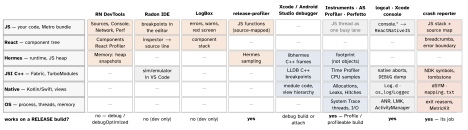

react-native · folio
In one line: React Native DevTools (Chrome DevTools frontend, default since 0.76) debugs the JS + React layer of a debug build; everything below JSI — C++, Kotlin/Swift, the OS — is Xcode / Android Studio territory, and release builds are debugged with profilers, logs and symbolicated crash reports. Name the layer first, then the tool.
Download PDF Print view LaTeX source


React Native DevTools — what is in it
- Open:
jin the Metro terminal, or Dev Menu → Open DevTools (Cmd/Ctrl+MAndroid emulator,Ctrl+Cmd+ZiOS Simulator, shake). - Console · Sources (breakpoints, conditional, logpoints,
debugger;) · Memory (heap snapshots, allocation timeline) · React Components (edit props/state; “Memo” badge = React Compiler) · React Profiler (commit flame graph). - 0.83: Network (
fetch, XHR,<Image>; headers, timings, previews, Initiator = JS call stack; no WebSockets, mocking, throttling yet) · Performance (JS, React tracks, network, User Timings on one timeline) · a desktop app. 0.84 dropped the in-app Perf/Network tabs; 0.86 added light/dark emulation. - Docs’ own scope: React app concerns, not a replacement for native tools.
History · Radon · LogBox · logs
- Remote JS debugging ran your JS in Chrome’s V8 — another engine, impossible with JSI. Flipper: removed from new projects in 0.74, “unsupported”. 0.76 announced the end of log forwarding to the Metro terminal.
- Radon IDE (Software Mansion): VS Code/Cursor extension running the Simulator/emulator inside the editor — editor breakpoints, inspector → source, network inspector, router integration, previews, replays. Free + paid.
- LogBox: fatal = red screen;
console.error/warn= badges, hidden while DevTools is attached;LogBox.ignoreLogs([...]); off in release. - Native logs:
adb logcat(JS console = tagReactNativeJS); Xcode console / Console.app. A module’sLog.d/os_lognever reaches DevTools. Since 0.82 an unhandled promise rejection is aconsole.error.
Debugging a release build
- No DevTools, no LogBox in release. Dev builds are slow (
__DEV__checks, no minify) — never judge performance there. debugOptimized(Android, 0.82): C++ optimised + JS debuggable; ∼20 → ∼60 FPS vsdebug.npx react-native run-android --mode debugOptimized.- JS CPU in release:
react-native-release-profiler—startProfiling()/stopProfiling(true), pull withnpx react-native-release-profiler --fromDownload --appId <id>; open in Perfetto / SpeedScope /chrome://tracing. - System: Android Studio Capture System Activities (profileable) — watch threads
mqt_js(JS) and the UI/RenderThread crossing 16 ms; Perfetto for exported traces. iOS: Instruments on the Profile config. - Field data:
PerformanceObserver(stable 0.83) works in production — marks, measures,longtask,eventtimings to your analytics.
Example — symbolicate a Hermes JS crash
# android/app/build.gradle: emit the Hermes map
react { hermesFlags = ["-O", "-output-source-map"] }
# iOS "Bundle React Native code and images" phase:
export SOURCEMAP_FILE="$(pwd)/../main.jsbundle.map"
# prod stack says p@1:132161 (bytecode offset)
MAP=android/app/build/generated/sourcemaps/react/\
release/index.android.bundle.map
npx metro-symbolicate $MAP < stack.txt
adb logcat -d | npx metro-symbolicate $MAPNative: iOS dSYM, Android R8 mapping.txt + NDK symbols — upload all to the crash reporter per build; the JS map also per OTA update.
Traps
- “The map from yesterday’s build will do” — maps are per exact build/commit; a mismatched map gives confident, wrong lines.
- A heap snapshot shows the JS heap only — decoded bitmaps and native module memory are invisible there (use Xcode/AS memory tools).
- “DevTools shows nothing, the network call never happened” — WebSocket traffic and native-module HTTP (OkHttp/URLSession in a SDK) are not in the Network panel.
Remember
Layer → tool: JS/React = DevTools · C++/native = Xcode/Android Studio · release = profiler + logs + symbolicated crashes.